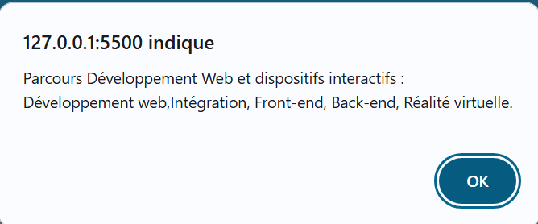
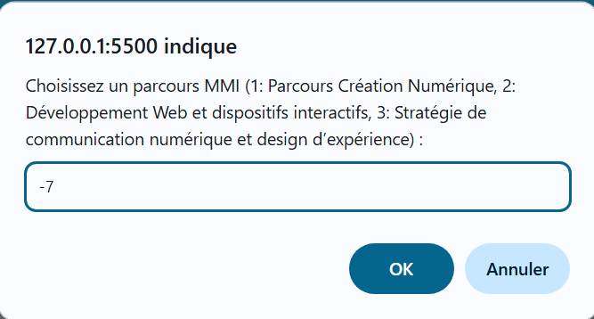

switch)
Cet exercice pratique vise à mettre en œuvre la structure
conditionnelle switch pour orienter un
utilisateur vers les différents parcours de notre département MMI.
Les choix possibles pour l'utilisateur sont :
prompt().
switch sur la valeur
saisie pour afficher (avec alert()) une description courte du pôle choisi pour les choix 1, 2 et 3.
default.
Contraintes techniques :
parseInt() pour convertir la saisie
(qui est une chaîne de caractères) en nombre.
break à la fin de
chaque case.
default pour gérer
toutes les saisies hors de la plage 1-3 (incluant les nombres
négatifs ou 'NaN' si l'utilisateur annule ou entre du texte).
Voici le comportement attendu de l'application JavaScript (les boîtes de dialogue) :
prompt().


default.